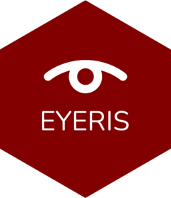

Changelog
Source:NEWS.md
eyeris (development version)
eyeris 0.1.0.9000
February 11th, 2025
Breaking changes
- NF (#10): add support for
.ascfiles containing multiple recording segments within the same file (#120)- There is a new
blockargument added to theload_asc()function - The default setting is “auto”, which aims to automatically handle multiple recording segments within the same
.ascfile. We recommend using this default as this is likely the safer choice rather than assuming a single-block recording. Furthermore, add downstream functions are intentionally designed to support any N number of blocks; using the “auto” setting automatically enables this support for.ascfiles containing single recording blocks by labeling the single recording session asblock_1 - You can also manually specify a different block value (numeric) instead of “auto”, which can be helpful for multi-block experiments where each block/run was recorded to a separate
.ascfile. This is especially important to consider when running the downstreamepoch()andbidsify()functions so that derived files and summary reports are properly labeled with the correction block/run number - Currently, there is also a
NULLoption; however, this is likely going to just be a part ofbetatesting and will probably be removed in a future version given the foregoing 2 options should cover most (if not all) use cases
- There is a new
New features
- NF: robust HTML and PDF output summary sidecar reports within
bidsify()(#120)- Here, reports are well-organized both by block/run and any specific event message epochs that have been processed using the
epoch()function - For epoched data, we now provide a useful interactive utility within the epoch-specific HTML reports: you can now use your mouse and/or keyboard to swiftly navigate through an interactive gallery of pupil plot segments from every single trial from any given subject, right out-of-the-box! We hope this alleviates some of the complexities/roadblocks users might face when needing to perform manual inspections of their data for quality assurance and/or diagnostic purposes.
- Here, reports are well-organized both by block/run and any specific event message epochs that have been processed using the
Minor improvements and fixes
- FF (#118): resolved a minor bug in the EyeLink EDF header
modelandversionfields for data collected on newer EyeLink hardware/software (#120) - ENH: event epoching is now both more robust and super fast (#120)
- We have implemented more efficient data structures to swiftly handle large sets of pupil samples in rapid time
- We have also added in better visual feedback within the console regarding epoching progress
- Similarly, these added benefits coincide nicely with the new multi-block support (#10)
- General bug fixes and enhancements to codebase and front-end UX (#120)